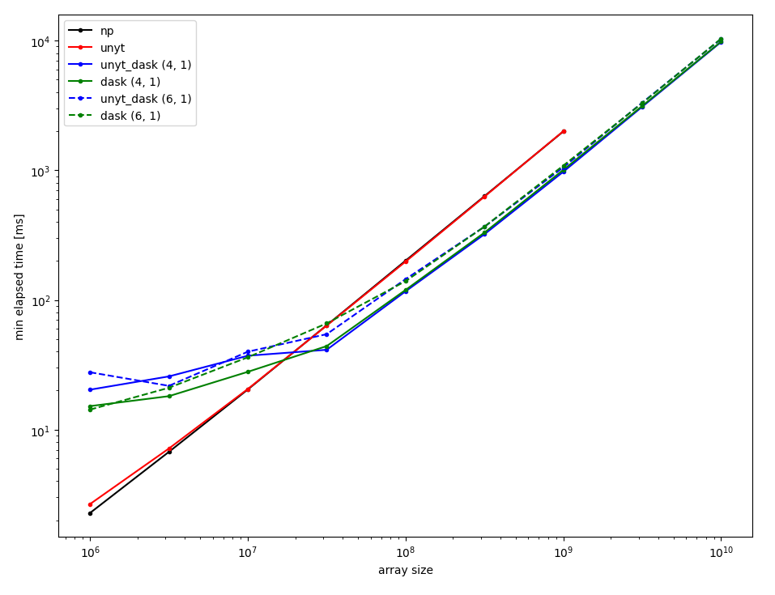

Daskified unyt Arrays¶
Notes on how yt uses unyt arrays.
Part of the Daskening of yt relies on adding Dask support to unyt arrays (PR 185). As this has potential users beyond yt users, it is worth walking through its usage.
example usage¶
from unyt import dask_array as unyt_dask_array, unyt_quantity, unyt_array
from dask import array as da
import numpy as np
x1 = unyt_dask_array.unyt_from_dask(da.random.random((1e6,), chunks=(1e5)), 'm')
x1
|
x1.to('cm')
|
x2 = unyt_dask_array.unyt_from_dask(0.001 * da.random.random((1e6,), chunks=(1e5)), 'km')
x = (x1 + x2).to('m')
x
|
x.mean().compute()
unyt_quantity(0.99990974, 'm')
mask = np.greater(x1, unyt_quantity(50, 'cm').to(x1.units)) ## > operator is broken?
mask
|
x[mask].mean().compute()
unyt_quantity(1.24946259, 'm')
Design¶
The approach to a daskifed unyt array is to create a new Dask Collection that has the behavior of both a dask array and a unyt array.
Insert some code snippets…
a comparison¶
Using unyt dask arrays comes with the enhanced performance expected from using dask arrays.
array_shape = (int(1e8), )
chunk_size = 1e6
plain_numpy = np.ones(array_shape[0])
plain_unyt = unyt_array(plain_numpy,'m')
plain_dask = da.ones(array_shape[0], chunks = (chunk_size,))
unyt_dask = unyt_dask_array.unyt_from_dask(plain_dask,'m')
Operations for all four arrays:
%%timeit
(plain_numpy ** 2).mean()
204 ms ± 1.9 ms per loop (mean ± std. dev. of 7 runs, 1 loop each)
%%timeit
(plain_unyt ** 2).mean()
203 ms ± 2.21 ms per loop (mean ± std. dev. of 7 runs, 1 loop each)
%%timeit
(plain_dask ** 2).mean().compute()
87.8 ms ± 4.67 ms per loop (mean ± std. dev. of 7 runs, 10 loops each)
%%timeit
(unyt_dask ** 2).mean().compute()
85.2 ms ± 5.14 ms per loop (mean ± std. dev. of 7 runs, 10 loops each)
Operations with unit conversions
%%timeit
(plain_unyt.to('cm') ** 2).mean()
372 ms ± 14.4 ms per loop (mean ± std. dev. of 7 runs, 1 loop each)
%%timeit
(unyt_dask.to('cm') ** 2).mean().compute()
101 ms ± 1.6 ms per loop (mean ± std. dev. of 7 runs, 10 loops each)
an aside on when to convert units¶
note, it’s worth a reminder that when stringing together operations you can sometimes save on computation by delaying the scalar operation until after any reductions.
result = ( ( 100 * plain_numpy )** 2).mean()
result_convert_after = (plain_numpy** 2).mean() * (100 **2)
print([result, result_convert_after, result == result_convert_after])
[10000.0, 10000.0, True]
since our unit conversions are simply scalar multiplications, the unit equivalent would be:
result = (plain_unyt.to('cm')** 2).mean()
result_convert_after = (plain_unyt** 2).mean().to('cm * cm')
print([result, result_convert_after, result == result_convert_after])
[unyt_quantity(10000., 'cm**2'), unyt_quantity(10000., 'cm**2'), array(True)]
%%timeit
(plain_unyt ** 2).mean().to('cm*cm')
238 ms ± 3.54 ms per loop (mean ± std. dev. of 7 runs, 1 loop each)
%%timeit
(plain_unyt ** 2).to('cm*cm').mean()
412 ms ± 10.5 ms per loop (mean ± std. dev. of 7 runs, 1 loop each)
and in the case of our unyt_dask arrays:
%%timeit
(unyt_dask ** 2).to('cm*cm').mean().compute()
104 ms ± 3.53 ms per loop (mean ± std. dev. of 7 runs, 10 loops each)
%%timeit
(unyt_dask ** 2).mean().to('cm*cm').compute()
88.9 ms ± 6.54 ms per loop (mean ± std. dev. of 7 runs, 10 loops each)
So we see that in operations where it’s possible, it is worth putting off unit conversions until after array reductions so that we spend less time on multiplying by constants.
final performance comparison¶
Returning to the general question of unyt-dask array performance, we want to be sure that our unyt-dask arrays are preforming on-par with standard dask arrays. Towards that end, we’ve run a suite of performance tests measuring the time to execute (x ** 2).mean() vs size of the array, x. The full code is available at /code/test_daskunyt.py and the following figure captures the results:

The y-axis is the minimum execution time of the operation, x-axis is the size of the array. The black and red curves are standard numpy and unyt arrays, respectively. The blue and green curves are dask and unyt-dask arrays for different number of workers (4 and 6, both single-threaded). The chunksize is fixed at 1e7 for all runs. Add some more description…
So the unyt-dask arrays perform similarly to plain dask arrays and at larger array sizes provide a decent speedup compared to plain unyt arrays. Furthermore, the unyt-dask arrays allows computation on larger-than memory arrays. The largest array tests would require 80 Gb of memory if using a plain unyt array:
unyt_dask_array.unyt_from_dask(da.ones((1e10,), chunks=(1e7)),'m')
|
While the unyt-dask arrays may be quite useful to the general SciPy community, we are experimenting with using them directly within yt where the “chunks” of the dask-arrays are decided using yt’s spatial indexing of datasets. We discuss this in the following section.